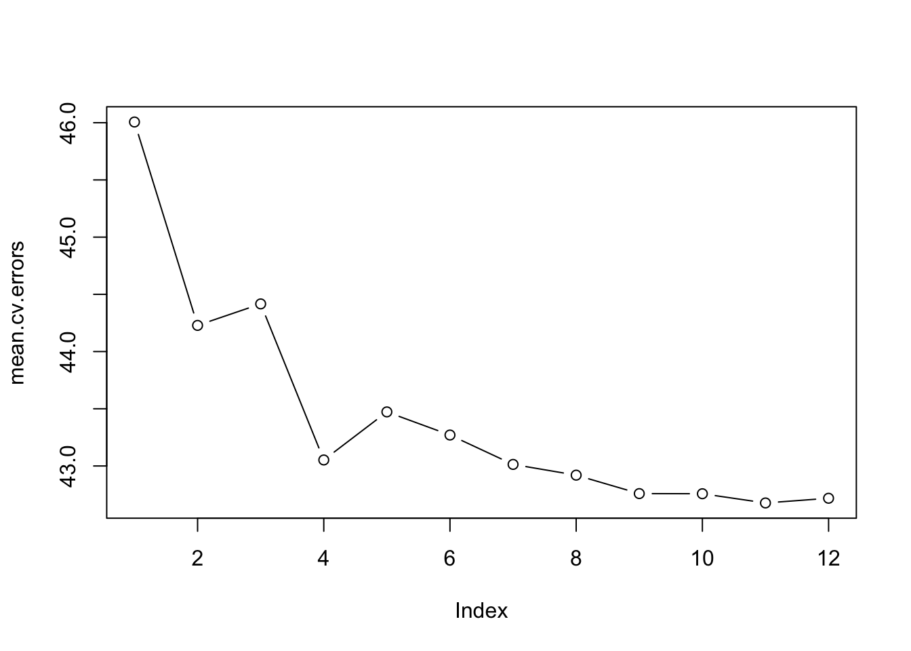

Linear regression is a simple and widely used statistical technique for modelling the relationship between a dependent variable and one or more independent variables. In this review, we will discuss the basics of linear regression, how to fit a linear regression model to a data set and how it can be used for prediction.
# Print the table using gtvariable_descriptions %>%gt() %>%tab_header("Variables")
Variables
Variable
Description
crim
Per capita crime rate by town
zn
Proportion of residential land zoned for lots over 25,000 sq. ft.
indus
Proportion of non-retail business acres per town
chas
Charles River dummy variable (1 if tract bounds river; 0 otherwise)
nox
Nitric oxides concentration (parts per 10 million)
rm
Average number of rooms per dwelling
age
Proportion of owner-occupied units built prior to 1940
dis
Weighted distances to five Boston employment centers
rad
Index of accessibility to radial highways
tax
Full-value property tax rate per $10,000
ptratio
Pupil-teacher ratio by town
lstat
% lower status of the population
medv
Median value of owner-occupied homes in $1000's
2.2 Predict per capita crime rate using best subset selection
We will now try to predict the per capita crime rate using best subset selection. We will first split the data into a training set and a test set. We will then fit a separate least squares regression to the training set for each possible combination of the 13 predictors. Then, we will use the regsubsets() function from the leaps library to perform best subset selection.
Because there is no predict() method for regsubsets() we have to create the same function ourselves. This function takes in the regsubsets object and the data set, and returns the predictions for the best model.
predict.regsubsets <-function(object, newdata, id, ...) { form <-as.formula(object$call[[2]]) mat <-model.matrix(form, newdata) coefi <-coef(object, id = id) xvars <-names(coefi) mat[, xvars] %*% coefi }
Next, we will try to choose among the models of different sizes using cross-validation. This approach is somewhat involved, as we must perform best subset selection within each of the\(k\) training sets.
First, we create a vector that allocates each observation to one of \(k=10\) folds, and create a matrix in which we will store the results.
Now we use a for loop to perform cross-validation. In the \(j\)th fold, the elements of folds that equal j are in the test set, and the remainder are in the training set. We make our predictions for each model size (using our new predict() method), compute the test errors on the appropriate subset, and store them in the appropriate slot in the matrix cv.errors.
for (j in1:k) { best.fit <-regsubsets(crim ~ .,data = Boston[folds != j, ],nvmax =12)for (i in1:12) { pred <-predict(best.fit, Boston[folds == j, ], id = i) cv.errors[j, i] <-mean((Boston$crim[folds == j] - pred)^2) } }
This has given us a \(10 \times 12\) matrix, of which the \((j,i)\)th element corresponds to the test MSE for the \(j\)th cross-validation fold for the best \(i\)-variable model. I use the apply() function to average over the columns of this matrix in order to obtain a vector for which the \(i\)th element is the cross-validation error for the \(i\)-variable model.
par(mfrow =c(1, 1))plot(mean.cv.errors, type ="b")

# Create a data framedata_df <-data.frame(index =1:length(mean.cv.errors), value = mean.cv.errors)# Index to highlighthighlight_index <-which.min(mean.cv.errors)# Set specific breaks on the x-axiscustom_breaks <-c(2, 4, 6, 8, 10, 12)# Plot the datacv.plot <-ggplot(data_df, aes(x = index, y = value)) +geom_line() +geom_point() +scale_color_npg() +theme_bw() +geom_point(data =data.frame(index = highlight_index, value = data_df$value[highlight_index]),aes(x = index, y = value), color ="red", shape =19, size =3) +labs(x ="Predictors", y ="Mean CV Errors") +scale_x_continuous(breaks = custom_breaks) +# Set custom breaks on the x-axistheme(axis.text =element_text(size =12))cv.plot
ggsave("/Users/gustavaagren/Documents/Statistik/Statistisk inlärning/Assignment/cv.pdf",dpi =100, width =18, height =12, units ="cm")
We see that cross-validation selects a 11-variable model. Now we cab perform the best subset selection on the full data set in order to obtain the best 11-variable model.
# Create model with the 11 best predictorsmodel <-lm(crim ~ zn + indus + chas + nox + rm + dis + rad + tax + ptratio + lstat + medv, data = Boston)# Round the coefficients, SE's, statistics and p-value to 2 decimalsmodel$coefficients <-round(model$coefficients, 2)# Present model in a table using gt and round all values to two digitsmodel %>%summary() %>%tidy() %>%gt() %>%tab_header("Model with 11 best predictors")
Model with 11 best predictors
term
estimate
std.error
statistic
p.value
(Intercept)
13.80
7.05771079
1.9553082
5.111011e-02
zn
0.05
0.01863204
2.6835489
7.528970e-03
indus
-0.06
0.08355054
-0.7181282
4.730177e-01
chas
-0.83
1.18060343
-0.7030303
4.823680e-01
nox
-10.02
5.10379184
-1.9632462
5.017815e-02
rm
0.62
0.59619914
1.0399210
2.988853e-01
dis
-1.01
0.27108496
-3.7257693
2.172029e-04
rad
0.61
0.08712143
7.0017217
8.296249e-12
tax
0.00
0.00516481
0.0000000
1.000000e+00
ptratio
-0.30
0.18556279
-1.6167034
1.065807e-01
lstat
0.14
0.07197165
1.9452104
5.231662e-02
medv
-0.22
0.05975868
-3.6814738
2.574373e-04
Using the best subset selection, we have been able to reduce ourselves to fewer predictors. The model with the 11 best predictors has an adjusted \(R^2\) of 0.63, which is higher than the model with all predictors. Still, it’s not a very efficient model in the sense that it has many variables. More ways to reduce the number of predictors could be to use ridge regression or lasso regression. More about this in the machine learning section.